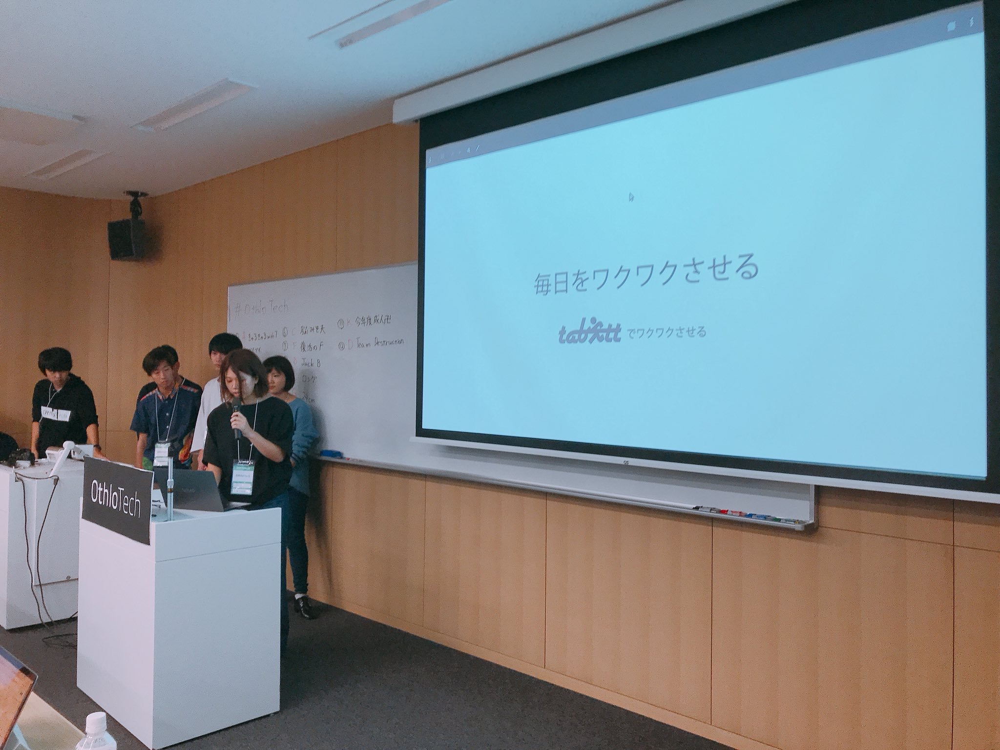
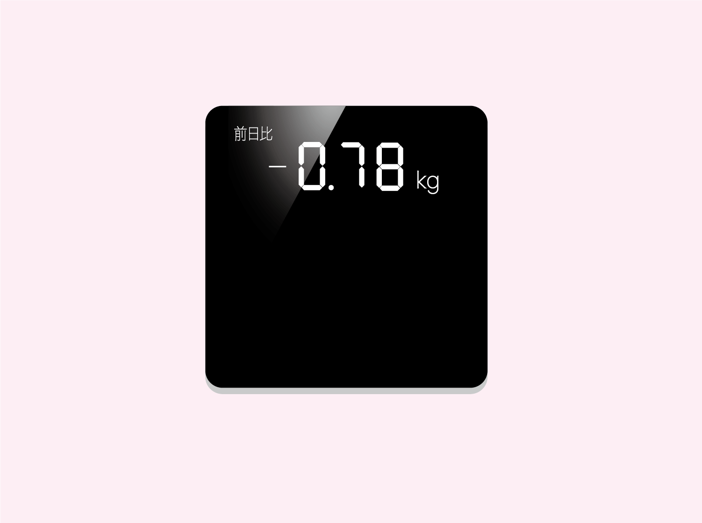
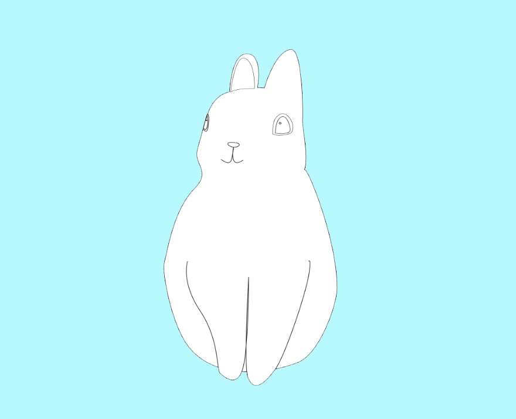

うぃるの
ポートフォリオサイト
Ichikawa Hinata
はじめまして、市川ひなたです。
大学ではうぃると呼ばれています。
学校：名古屋市立大学 芸術工学部 情報環境デザイン学科 3年
学校ではUI,UXデザインを勉強しています。独学でWebのコーディングを勉強しています。
将来は一つに絞らず、色々経験したいと考えています。
背景の写真は軽音部のライブ写真です。かっこよく撮ってもらえてお気に入りです。
{kind=link}
-About-
出身：三重県立四日市南高校 数理科学コース 卒業
映像制作を学ぶために名古屋市立大学へ入学。入学当時はカメラ技術や編集に興味がありましたが、授業で行ったwebサイトのコーディングにハマり、勉強をし始めました。
他にはデザインの勉強をしたり、Unityでゲーム作ったり、映像も作ってみたり、CGを作ってみたり、いろんなことに興味があります。
大学では軽音楽部で副部長を務め、ベースとボーカルをしています。そして、一眼レフで演奏する部員も撮ったりしています。
{kind=link}
{kind=link}
{kind=link}
-Skill Level-
| 0~25% | 触ったことがある |
| 26~50% | 調べながらであればある程度できる |
| 51~75% | ほとんど調べずに使うことができる |
| 76~100% | フレームワーク(応用機能)を利用して作成できる |
HTML,CSS
JavaScript
Illustrator
Photoshop
-Other Skills-
- jquery
- Sass
- Ruby on Rails
- C#(Unity)
- java
- Processing
-Studying Now-
- ReactNative
- Drawing
-Text Editor-
- Atom
- Sublime Text3
-Other-
- Unity
- git
- after effect
- light room
- maya

webサイト
2018.05 - 2018.06
大学祭のWeb長を務めて、学内に向けた告知までのお話。
UXデザイン
2018.05 - 2018.06
姿勢が悪くて肩こりに悩む人のために、着るだけで姿勢を矯正してくれるスーツを提案した。
アプリ・UXデザイン
2017.11-2018.1
ローカル地域の良さを若者に再発見してもらうために、旅で遊べるアプリを作った。
Webアプリ
2017.7 - 2017.12
Othlohack2017で作品が完成しなかったから、悔しくて1人でアプリを作りあげた。
UXデザイン
2017.06 - 2017.07
ダイエットしたい女性のために、前日比だけが表示される体重計を考えた。
webサイト
2017.05 - 2017.06
レイヤーを表現するために、Turn.jsを使って飛び出すうさぎを作った。

Webサイト
2017.3